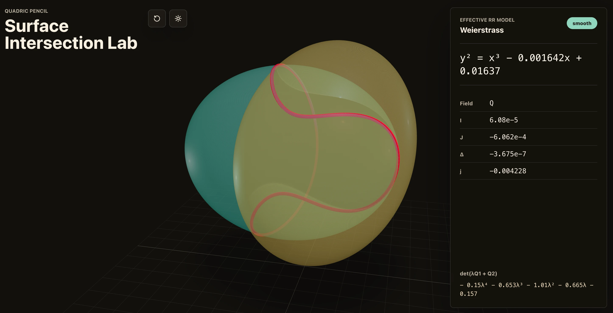

This post introduced GPT-5.5.
Update on April 24, 2026: GPT‑5.5 and GPT‑5.5 Pro are now available in the API. The system card has also been updated to describe the additional safeguards that apply.
We’re releasing GPT‑5.5, our smartest and most intuitive to use model yet, and the next step toward a new way of getting work done on a computer.
GPT‑5.5 understands what you’re trying to do faster and can carry more of the work itself. It excels at writing and debugging code, researching online, analyzing data, creating documents and spreadsheets, operating software, and moving across tools until a task is finished. Instead of carefully managing every step, you can give GPT‑5.5 a messy, multi-part task and trust it to plan, use tools, check its work, navigate through ambiguity, and keep going.
The gains are especially strong in agentic coding, computer use, knowledge work, and early scientific research—areas where progress depends on reasoning across context and taking action over time. GPT‑5.5 delivers this step up in intelligence without compromising on speed: larger, more capable models are often slower to serve, but GPT‑5.5 matches GPT‑5.4 per-token latency in real-world serving, while performing at a much higher level of intelligence. It also uses significantly fewer tokens to complete the same Codex tasks, making it more efficient as well as more capable.
We are releasing GPT‑5.5 with our strongest set of safeguards to date, designed to reduce misuse while preserving access for beneficial work. We evaluated this model across our full suite of safety and preparedness frameworks, worked with internal and external redteamers, added targeted testing for advanced cybersecurity and biology capabilities, and collected feedback on real use cases from nearly 200 trusted early-access partners before release.
Today, GPT‑5.5 is rolling out to Plus, Pro, Business, and Enterprise users in ChatGPT and Codex, and GPT‑5.5 Pro is rolling out to Pro, Business, and Enterprise users in ChatGPT. API deployments require different safeguards and we are working closely with partners and customers on the safety and security requirements for serving it at scale. We’ll bring GPT‑5.5 and GPT‑5.5 Pro to the API very soon.
GPT‑5.5 | GPT‑5.4 | GPT‑5.5 Pro | GPT‑5.4 Pro | Claude Opus 4.7 | Gemini 3.1 Pro | |
Terminal-Bench 2.0 | 82.7% | 75.1% | - | - | 69.4% | 68.5% |
Expert-SWE (Internal) | 73.1% | 68.5% | - | - | - | - |
GDPval (wins or ties) | 84.9% | 83.0% | 82.3% | 82.0% | 80.3% | 67.3% |
OSWorld-Verified | 78.7% | 75.0% | - | - | 78.0% | - |
Toolathlon | 55.6% | 54.6% | - | - | - | 48.8% |
BrowseComp | 84.4% | 82.7% | 90.1% | 89.3% | 79.3% | 85.9% |
FrontierMath Tier 1–3 | 51.7% | 47.6% | 52.4% | 50.0% | 43.8% | 36.9% |
FrontierMath Tier 4 | 35.4% | 27.1% | 39.6% | 38.0% | 22.9% | 16.7% |
CyberGym | 81.8% | 79.0% | - | - | 73.1% | - |
Model capabilities
OpenAI is building the global infrastructure for agentic AI, making it possible for people and businesses around the world to get work done with AI. Over the past year, we’ve seen AI dramatically accelerate software engineering. With GPT‑5.5 in Codex and ChatGPT, that same transformation is beginning to extend into scientific research and the broader work people do on computers.
Across these domains, GPT‑5.5 is not just more intelligent; it is more efficient in how it works through problems, often reaching higher-quality outputs with fewer tokens and fewer retries. On Artificial Analysis's Coding Index, GPT‑5.5 delivers state-of-the-art intelligence at half the cost of competitive frontier coding models.
The Artificial Analysis Intelligence Index(opens in a new window) is a weighted average of 10 evals ran by an external party: AA-LCR, AA-Omniscience, CritPt, GDPval-AA, GPQA Diamond, Humanity’s Last Exam, IFBench, SciCode, Terminal-Bench Hard, τ²-Bench Telecom.
Agentic coding
GPT‑5.5 is our strongest agentic coding model to date. On Terminal-Bench 2.0, which tests complex command-line workflows requiring planning, iteration, and tool coordination, it achieves a state-of-the-art accuracy of 82.7%. On SWE-Bench Pro, which evaluates real-world GitHub issue resolution, it reaches 58.6%, solving more tasks end-to-end in a single pass than previous models. On Expert-SWE, our internal frontier eval for long-horizon coding tasks with a median estimated human completion time of 20 hours, GPT‑5.5 also outperforms GPT‑5.4.
Across all three evals, GPT‑5.5 improves on GPT‑5.4’s scores while using fewer tokens.
The model’s coding strengths show up especially clearly in Codex where it can take on engineering work ranging from implementation and refactors to debugging, testing, and validation. Early testing suggests GPT‑5.5 is better at the behaviors real engineering work depends on, like holding context across large systems, reasoning through ambiguous failures, checking assumptions with tools, and carrying changes through the surrounding codebase.
Beyond benchmarks, early testers said GPT‑5.5 shows a stronger ability to understand the shape of a system: why something is failing, where the fix needs to land, and what else in the codebase would be affected.
“The first coding model I’ve used that has serious conceptual clarity.”

“The first coding model I’ve used that has serious conceptual clarity.”
Dan Shipper, Founder and CEO of Every, described GPT‑5.5 as “the first coding model I’ve used that has serious conceptual clarity.”
After launching an app, he spent days debugging a post-launch issue before bringing in one of his best engineers to rewrite part of the system. To test GPT‑5.5, he effectively rewound the clock: could the model look at the broken state and produce the same kind of rewrite the engineer eventually decided on? GPT‑5.4 could not. GPT‑5.5 could.

“It genuinely feels like I’m working with a higher intelligence, and there’s almost a sense of respect.”
“It genuinely feels like I’m working with a higher intelligence, and there’s almost a sense of respect.”
Pietro Schirano, CEO of MagicPath, saw a similar step change when GPT‑5.5 merged a branch with hundreds of frontend and refactor changes into a main branch that had also changed substantially, resolving the work in one shot in about 20 minutes.
Senior engineers who tested the model said GPT‑5.5 was noticeably stronger than GPT‑5.4 and Claude Opus 4.7 at reasoning and autonomy, catching issues in advance and predicting testing and review needs without explicit prompting. In one case, an engineer asked it to re-architect a comment system in a collaborative markdown editor and returned to a 12-diff stack that was nearly complete. Others said they needed surprisingly little implementation correction and felt more confident in GPT‑5.5’s plans compared with GPT‑5.4.
One engineer at NVIDIA who had early access to the model went as far as to say: "Losing access to GPT‑5.5 feels like I’ve had a limb amputated.”
Knowledge work
The same strengths that make GPT‑5.5 great at coding also make it powerful for everyday work on a computer. Because the model is better at understanding intent, it can move more naturally through the full loop of knowledge work: finding information, understanding what matters, using tools, checking the output, and turning raw material into something useful.
In Codex, GPT‑5.5 is better than GPT‑5.4 at generating documents, spreadsheets, and slide presentations. Alpha testers said it outperformed past models on work like operational research, spreadsheet modeling, and turning messy business inputs into plans. When combined with Codex’s computer use skills, GPT‑5.5 brings us closer to the feeling that the model can actually use the computer with you: seeing what’s on screen, clicking, typing, navigating interfaces, and moving across tools with precision.
Teams at OpenAI are already using these strengths in real workflows. Today, more than 85% of the company uses Codex every week across functions including software engineering, finance, communications, marketing, data science, and product management. In Comms, the team used GPT‑5.5 in Codex to analyze six months of speaking request data, build a scoring and risk framework, and validate an automated Slack agent so low-risk requests could be handled automatically while higher-risk requests still route to human review. In Finance, the team used Codex to review 24,771 K-1 tax forms totaling 71,637 pages, using a workflow that excluded personal information and helped the team accelerate the task by two weeks compared to the prior year. On the Go-to-Market team, an employee automated generating weekly business reports, saving 5-10 hours a week.
In ChatGPT, GPT‑5.5 Thinking unlocks faster help for harder problems, with smarter and more concise answers to help you move through complex work more efficiently. It excels at professional work like coding, research, information synthesis and analysis, and document-heavy tasks, especially when using plugins.
In GPT‑5.5 Pro, early testers are seeing a significant step up in both the difficulty and quality of work ChatGPT can take on, with latency improvements that make it much more practical for demanding tasks. Compared to GPT‑5.4 Pro, testers found GPT‑5.5 Pro’s responses significantly more comprehensive, well-structured, accurate, relevant, and useful, with especially strong performance in business, legal, education, and data science.
GPT‑5.5 reaches state-of-the-art performance across multiple benchmarks that reflect this kind of work. On GDPval, which tests agents’ abilities to produce well-specified knowledge work across 44 occupations, GPT‑5.5 scores 84.9%. On OSWorld-Verified, which measures whether a model can operate real computer environments on its own, it reaches 78.7%. And on Tau2-bench Telecom, which tests complex customer-service workflows, it reaches 98.0% without prompt tuning. GPT‑5.5 also performs strongly across other knowledge work benchmarks: 60.0% on FinanceAgent, 88.5% on internal investment-banking modeling tasks, and 54.1% on OfficeQA Pro.
Tau2-bench Telecom was run without prompt tuning (and GPT‑4.1 as user model). GPT‑5.5 understands the intent of the task better and is more token efficient than its predecessors.
Scientific research
GPT‑5.5 also shows gains on scientific and technical research workflows, which require more than answering a hard question. Researchers need to explore an idea, gather evidence, test assumptions, interpret results, and decide what to try next. GPT‑5.5 is better at persisting across that loop than other models.
Notably, GPT‑5.5 shows a clear improvement over GPT‑5.4 on GeneBench(opens in a new window), a new eval focusing on multi-stage scientific data analysis in genetics and quantitative biology. These problems require models to reason about potentially ambiguous or errorful data with minimal supervisory guidance, address realistic obstacles such as hidden confounders or QC failures, and correctly implement and interpret modern statistical methods. The model’s performance is striking in light of the fact that tasks here often correspond to multi-day projects for scientific experts.
Similarly, on BixBench(opens in a new window), a benchmark designed around real-world bioinformatics and data analysis, GPT‑5.5 achieved leading performance among models with published scores. The model’s scientific capabilities are now strong enough to meaningfully accelerate progress at the frontiers of biomedical research as a bona fide co-scientist.
In another example, an internal version of GPT‑5.5 with a custom harness helped discover a new proof(opens in a new window) about Ramsey numbers, one of the central objects in combinatorics. Combinatorics studies how discrete objects fit together: graphs, networks, sets, and patterns. Ramsey numbers ask, roughly, how large a network has to be before some kind of order is guaranteed to appear. Results in this area are rare and often technically difficult. Here, GPT‑5.5 found a proof of a longstanding asymptotic fact about off-diagonal Ramsey numbers, later verified in Lean. The result is a concrete example of GPT‑5.5 contributing not just code or explanation, but a surprising and useful mathematical argument in a core research area.
Early testers used GPT‑5.5 Pro in ChatGPT less like a one-shot answer engine and more like a research partner: critiquing manuscripts over multiple passes, stress-testing technical arguments, proposing analyses, and working with code, notes, and PDF context. The common thread is that GPT‑5.5 is better at helping researchers move from question to experiment to output.

Derya Unutmaz, an immunology professor and researcher at the Jackson Laboratory for Genomic Medicine, used GPT‑5.5 Pro to analyze a gene-expression dataset with 62 samples and nearly 28,000 genes, producing a detailed research report that not only summarized the findings but also surfaced key questions and insights—work he said would have taken his team months.

Bartosz Naskręcki, assistant professor of mathematics at Adam Mickiewicz University in Poznań, Poland, used GPT‑5.5 in Codex to build an algebraic-geometry app from a single prompt in 11 minutes, visualizing the intersection of quadratic surfaces and converting the resulting curve into a Weierstrass model.
He later extended the app with more stable singularity visualization and exact coefficients that can be reused in further work. For him, the bigger shift is that Codex can now help implement custom mathematical visualization and computer-algebra workflows that previously required dedicated tools. Together, these examples show GPT‑5.5 turning expert intent into working research tools and analyses.

Credit: Bartosz Naskręcki(opens in a new window)
Prompt: # Algebraic geometry surface intersection
Make an app which draws two quadratic surfaces and colors in red the intersection curve. Use computational Riemann-Roch theorem to convert this into Weierstrass curve.
## Main window
Two tinted surfaces with a slightly transparent shading, high quality rendering intersect along a red colored algebraic curve
Rotation with mouses in both directions, full pinch mechanism for zoom, haptic press to show the little menu with sliders for changing the coefficients of each surface; detection via Z-buffor level
## Side right window
Short Weierstrass equation (over Q or quadratic field extension) computed on the go via effective Riemann-Roch theorem formulas
## Ambient mode where all the controls are hidden and the user can admire the beauty of the shapes
## Specs
App is running in the browser, light-weight implementation with full stack newest libraries, portable, deployable
## Docs
Git repo, journal, plan (Markdown files)
“It’s incredibly energizing to use OpenAI’s new GPT-5.5 model in our harness, have it reason over massive biochemical datasets to predict human drug outcomes, and then see it deliver significant accuracy gains on our hardest drug discovery evals. If OpenAI keeps cooking like this, the foundations of drug discovery will change by the end of the year.”
Next-generation inference efficiency
Serving GPT‑5.5 at GPT‑5.4 latency required rethinking inference as an integrated system, not a set of isolated optimizations. GPT‑5.5 was co-designed for, trained with, and served on NVIDIA GB200 and GB300 NVL72 systems. Codex and GPT‑5.5 were instrumental in how we achieved our performance targets. Codex helped the team move faster from idea to benchmarkable implementation, sketching approaches, wiring experiments, and helping identify which optimizations were worth deeper investment. GPT‑5.5 helped find and implement key improvements in the stack itself. Put simply, the model helped improve the infrastructure that serves it.
One such improvement was load balancing and partitioning heuristics. Before GPT‑5.5, we split requests on an accelerator into a fixed number of chunks to balance work across computing cores, ensuring big and small requests could run on the same GPU. However, a pre-determined number of static chunks is not optimal for all traffic shapes. To better utilize GPUs, Codex analyzed weeks’ worth of production traffic patterns and wrote custom heuristic algorithms to optimally partition and balance work. The effort had an outsized impact, increasing token generation speeds by over 20%.
Advancing cybersecurity for everyone’s safety
Preparing the world for models that are very good at finding and patching security vulnerabilities is a team sport and will require the entire ecosystem to work hard to build resilience, with democratized model access and iterative deployment for the next era of cyber defense.
Frontier models are becoming increasingly more capable in cybersecurity. Those capabilities will become broadly distributed and we believe the best path forward is to make sure they can be put to use for accelerating cyber defense and strengthening the ecosystem.
GPT‑5.5 is an incremental but important step towards AI that can solve some of the world’s toughest challenges like cybersecurity. With GPT‑5.2 in December, we proactively deployed the necessary cyber safeguards to limit potential cyber abuse with our models; now with GPT‑5.5, we’re deploying stricter classifiers for potential cyber risk which some users may find annoying initially, as we tune them over time.
We’ve identified cybersecurity as a category in our Preparedness Framework(opens in a new window) for years as our models have incrementally improved, while we develop and calibrate mitigations iteratively, to be able to responsibly release models with meaningful cybersecurity capabilities.
We are deploying industry-leading safeguards for this level of cyber capability. We first introduced cyber-specific safeguards with GPT‑5.2(opens in a new window) last year, which we have continued to test, refine, and build on in subsequent deployments. For GPT‑5.5, we designed tighter controls around higher-risk activity, sensitive cyber requests, and added protections for repeated misuse. Broad access is made possible through our investments in model safety, authenticated usage, and monitoring for impermissible use. We have been working with external experts for months to develop, test and iterate on the robustness of these safeguards. With GPT‑5.5, we are ensuring developers can secure their code with ease, while putting stronger controls around the cyber workflows most likely to cause harm by malicious actors.
We are expanding access to accelerate cyber defense at every level. We are making our cyber-permissive models available through Trusted Access for Cyber, starting with Codex, which includes expanded access to the advanced cybersecurity capabilities of GPT‑5.5 with fewer restrictions for verified users meeting certain trust signals(opens in a new window) at launch. Organizations who are responsible for defending critical infrastructure can apply to access cyber-permissive models like GPT‑5.4‑Cyber, while meeting strict security requirements to use these models for securing their internal systems. This gives a wide range of verified defenders more capable tools for legitimate security work with less unnecessary friction to ensure we democratize access to important defensive capabilities. Users can apply for trusted access at chatgpt.com/cyber(opens in a new window) to reduce unnecessary refusals while using GPT‑5.5 for verified defensive work.
We are working with government partners to help protect critical infrastructure for the public. Together, we are exploring how advanced AI can support the defensive work of trusted officials responsible for systems people rely on, from the digital systems that secure important taxpayer data to the power grid and water supplies in local communities.
We are treating the biological/chemical and cybersecurity capabilities of GPT‑5.5 as High under our Preparedness Framework(opens in a new window). While GPT‑5.5 didn’t reach Critical cybersecurity capability level, our evaluations and testing showed that its cybersecurity capabilities are a step up compared to GPT‑5.4.
In addition, GPT‑5.5 went through our full safety and governance process prior to release, including preparedness evaluations, domain-specific testing, new targeted evaluations for advanced biology and cybersecurity capabilities, and robust testing with external experts. We share more details in the GPT‑5.5 system card(opens in a new window).
This work reflects our broader AI resilience approach, which we believe is needed as model capabilities advance. We want powerful AI to be available to the people using it to defend systems, institutions, and the public. The viable path is trusted access, robust safeguards that scale with capability, and the operational capacity to detect and respond to serious misuse.
Availability and pricing
Today, GPT‑5.5 is rolling out to Plus, Pro, Business, and Enterprise users in ChatGPT and Codex, and GPT‑5.5 Pro is rolling out to Pro, Business, and Enterprise users in ChatGPT. We’ll bring GPT‑5.5 and GPT‑5.5 Pro to the API very soon.
In ChatGPT, GPT‑5.5 Thinking is available to Plus, Pro, Business, and Enterprise users. GPT‑5.5 Pro, designed for even harder questions and higher-accuracy work, is available to Pro, Business, and Enterprise users.
In Codex, GPT‑5.5 is available for Plus, Pro, Business, Enterprise, Edu, and Go plans with a 400K context window. GPT‑5.5 is also available in Fast mode, generating tokens 1.5x faster for 2.5x the cost.
For API developers, gpt-5.5 will soon be available in the Responses and Chat Completions APIs at $5 per 1M input tokens and $30 per 1M output tokens, with a 1M context window. Batch and Flex pricing are available at half the standard API rate, while Priority processing is available at 2.5x the standard rate. We will also release gpt-5.5-pro in the API for even higher accuracy, priced at $30 per 1M input tokens and $180 per 1M output tokens. See the pricing page for full details.
While GPT‑5.5 is priced higher than GPT‑5.4, it is both more intelligent and much more token efficient. In Codex, we have carefully tuned the experience so GPT‑5.5 delivers better results with fewer tokens than GPT‑5.4 for most users, while continuing to offer generous usage across subscription levels.
Evaluations
Coding
Eval | GPT‑5.5 | GPT‑5.4 | GPT‑5.5 Pro | GPT‑5.4 Pro | Claude Opus 4.7 | Gemini 3.1 Pro |
SWE-Bench Pro (Public) * | 58.6% | 57.7% | - | - | 64.3% | 54.2% |
Terminal-Bench 2.0 | 82.7% | 75.1% | - | - | 69.4% | 68.5% |
Expert-SWE (Internal) | 73.1% | 68.5% | - | - | - | - |
*Labs have noted evidence of memorization(opens in a new window) on this eval
Professional
Eval | GPT‑5.5 | GPT‑5.4 | GPT‑5.5 Pro | GPT‑5.4 Pro | Claude Opus 4.7 | Gemini 3.1 Pro |
GDPval (wins or ties) | 84.9% | 83.0% | 82.3% | 82.0% | 80.3% | 67.3% |
FinanceAgent v1.1 | 60.0% | 56.0% | - | 61.5% | 64.4% | 59.7% |
Investment Banking Modeling Tasks (Internal) | 88.5% | 87.3% | 88.6% | 83.6% | - | - |
OfficeQA Pro | 54.1% | 53.2% | - | - | 43.6% | 18.1% |
Computer use and vision
Eval | GPT‑5.5 | GPT‑5.4 | GPT‑5.5 Pro | GPT‑5.4 Pro | Claude Opus 4.7 | Gemini 3.1 Pro |
OSWorld-Verified | 78.7% | 75.0% | - | - | 78.0% | - |
MMMU Pro (no tools) | 81.2% | 81.2% | - | - | - | 80.5% |
MMMU Pro (with tools) | 83.2% | 82.1% | - | - | - | - |
Tool use
Eval | GPT‑5.5 | GPT‑5.4 | GPT‑5.5 Pro | GPT‑5.4 Pro | Claude Opus 4.7 | Gemini 3.1 Pro |
BrowseComp | 84.4% | 82.7% | 90.1% | 89.3% | 79.3% | 85.9% |
MCP Atlas** | 75.3% | 70.6% | - | - | 79.1% | 78.2% |
Toolathlon | 55.6% | 54.6% | - | - | - | 48.8% |
Tau2-bench Telecom*** | 98.0% | 92.8% | - | - | - | - |
** MCP Atlas: results from Scale AI after the latest 2026 April update.
*** Tau2-bench telecom: results for 5.5 and 5.4 with original prompts i.e no prompt adjustment. This omits results from other labs that were evaluated with prompt adjustments.
Academic
Eval | GPT‑5.5 | GPT‑5.4 | GPT‑5.5 Pro | GPT‑5.4 Pro | Claude Opus 4.7 | Gemini 3.1 Pro |
GeneBench | 25.0% | 19.0% | 33.2% | 25.6% | - | - |
FrontierMath Tier 1–3 | 51.7% | 47.6% | 52.4% | 50.0% | 43.8% | 36.9% |
FrontierMath Tier 4 | 35.4% | 27.1% | 39.6% | 38.0% | 22.9% | 16.7% |
BixBench | 80.5% | 74.0% | - | - | - | - |
GPQA Diamond | 93.6% | 92.8% | - | 94.4% | 94.2% | 94.3% |
Humanity's Last Exam (no tools) | 41.4% | 39.8% | 43.1% | 42.7% | 46.9% | 44.4% |
Humanity's Last Exam (with tools) | 52.2% | 52.1% | 57.2% | 58.7% | 54.7% | 51.4% |
Cybersecurity
Eval | GPT‑5.5 | GPT‑5.4 | GPT‑5.5 Pro | GPT‑5.4 Pro | Claude Opus 4.7 | Gemini 3.1 Pro |
Capture-the-Flags challenge tasks (Internal)**** | 88.1% | 83.7% | - | - | - | - |
CyberGym | 81.8% | 79.0% | - | - | 73.1% | - |
**** An expansion of the hardest CTFs used in system cards with additional hard challenges.
Long context
Eval | GPT‑5.5 | GPT‑5.4 | GPT‑5.5 Pro | GPT‑5.4 Pro | Claude Opus 4.7 | Gemini 3.1 Pro |
Graphwalks BFS 256k f1 | 73.7% | 62.5% | - | - | 76.9% | - |
Graphwalks BFS 1mil f1 | 45.4% | 9.4% | - | - | 41.2% (Opus 4.6) | - |
Graphwalks parents 256k f1 | 90.1% | 82.8% | - | - | 93.6% | - |
Graphwalks parents 1mil f1 | 58.5% | 44.4% | - | - | 72.0% (Opus 4.6) | - |
OpenAI MRCR v2 8-needle 4K-8K | 98.1% | 97.3% | - | - | - | - |
OpenAI MRCR v2 8-needle 8K-16K | 93.0% | 91.4% | - | - | - | - |
OpenAI MRCR v2 8-needle 16K-32K | 96.5% | 97.2% | - | - | - | - |
OpenAI MRCR v2 8-needle 32K-64K | 90.0% | 90.5% | - | - | - | - |
OpenAI MRCR v2 8-needle 64K-128K | 83.1% | 86.0% | - | - | - | - |
OpenAI MRCR v2 8-needle 128K-256K | 87.5% | 79.3% | - | - | 59.2% | - |
OpenAI MRCR v2 8-needle 256K-512K | 81.5% | 57.5% | - | - | - | - |
OpenAI MRCR v2 8-needle 512K-1M | 74.0% | 36.6% | - | - | 32.2% | - |
Abstract reasoning
Eval | GPT‑5.5 | GPT‑5.4 | GPT‑5.5 Pro | GPT‑5.4 Pro | Claude Opus 4.7 | Gemini 3.1 Pro |
ARC-AGI-1 (Verified) | 95.0% | 93.7% | - | 94.5% | 93.5% | 98.0% |
ARC-AGI-2 (Verified) | 85.0% | 73.3% | - | 83.3% | 75.8% | 77.1% |
Evals of GPT were run with reasoning effort set to xhigh and were conducted in a research environment, which may provide slightly different output from production ChatGPT in some cases.